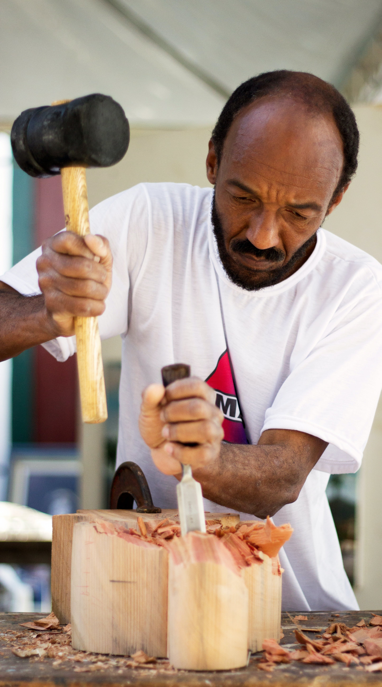

Artist Assistant, Science UK
Experience Reqired
- Strong drawing and draftsman skills
- Strong colour theory and painting skills
- Art handling/packing and hanging experience
- Mac literate
- Good level of fitness
- Knowledge of painting techniques and materials
- Strong time management skills
- A good understanding of colour and colour theory is a bonus
Key Areas Of Reponsibility
- Preparing canvases- stretching, taping and priming.
- Looking after and maintaining tools and any work related equipment.
- Moving and lifting artwork and materials under supervision.
- Working with the tech team to hang and move artworks across various locations
- Overseeing photography in the studio
- Research for future projects as instructed by studio manager
- Assemble, construct and disassemble artworks where required
- Thinking commercially at all time
- Working to tight deadlines and being aware of and being able to produce
work at levels of quality needed.
Link To Apply on Indeed.com
Apply!
